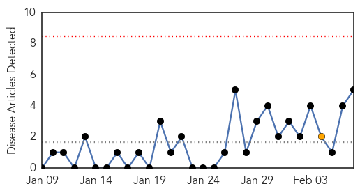
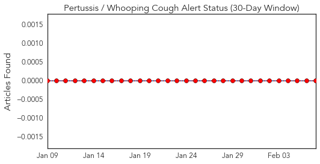
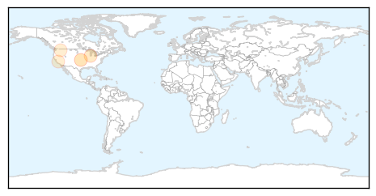
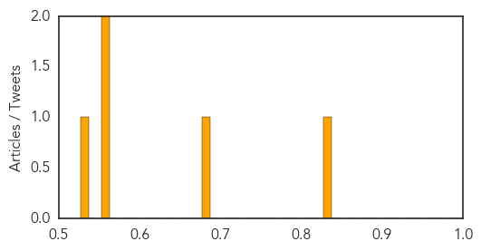

Toggle navigation
Early Warning
Daily Alerts
Pertussis / Whooping Cough
Feb 07, 2015
Compare to:
-
Dengue Fever
Hemmorhagic Fever
Mold/Fungal Infection
Influenza
Meningitis
Middle East Respiratory Syndrome
Cholera
Hepatitis
Chikungunya
Yellow Fever
Bubonic Plague
West Nile Virus
Swine Flu
Ebola
Measles
Unknown
Mumps
30 Day Trends
Web: 0
alerts
, 1
warnings
Twitter: 0
alerts
, 0
warnings
Top Articles:
0.834
American Osteopathic Association reiterates support for CDC vaccination protocols
0.688
American Osteopathic Association Affirms Safety and Effectiveness of Vaccines
0.567
02.06.15 -- OPKO Submits Investigational New Drug Application For Factor VIIa-CTP To Treat Hemophilia
0.558
Oregon's vaccination exemption rate doesn't tell the whole story (searchable database)
0.540
Foster parents decry flu vaccine requirement
Top Tweets:
No tweets found for Feb 07, 2015
Web/News Articles

Tweets

Article Locations

Article Confidences
